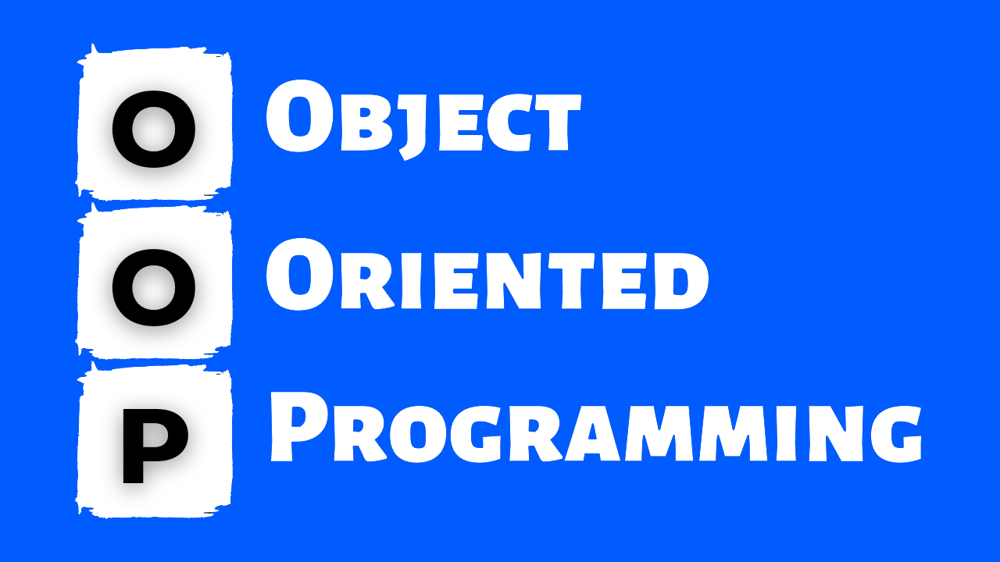

Programação Orientada a Objetos
Seja Bem vindo!👋 Através deste artigo você entenderá sobre a Programação orientada a
objetos, que é um conhecimento muito importante para qualquer desenvolvedor!

Definição
A programação orientada a objetos (POO) é um paradigma de programação que organiza o design de software
em
torno de dados ou objetos, em vez de funcionalidade e lógica. Nesse paradigma, os objetos são definidos
como
campos de dados com propriedades e comportamentos exclusivos. A POO facilita o reuso e manutenção do
código
através do encapsulamento, abstração, polimorfismo, design patterns e a separação de interface e
implementação.
Características
Na programação orientada a objetos, os objetos são modelados como entidades autônomas, pois possuem
atributos
e comportamentos independentes. Esses objetos representam elementos do mundo real e seus comportamentos.
A
POO permite que você crie programas mais modulares, flexíveis e fáceis de entender. Além disso, ela
oferece
uma maneira intuitiva de pensar sobre o design do software, aproximando-o do manuseio das coisas do
mundo
real.
O que é um Objeto?
Um objeto é uma entidade que combina dados (atributos) e comportamento (métodos) em um único pacote. Uma
classe é a planta ou o molde que define como os objetos de um tipo específico devem ser criados. Os
objetos são então instâncias dessas classes.
Como instanciar um objeto?
Instanciar um objeto significa criar uma nova instância desse objeto, com base em uma classe existente.
Quando você instancia um objeto, está criando uma cópia da classe que pode ser usada para armazenar
dados específicos e executar operações específicas definidas na classe.
Exemplo
public class Pessoa {
String nome;
int idade;
void imprimirInformacoes() {
System.out.println("Nome: " + nome);
System.out.println("Idade: " + idade + " anos");
}
public static void main(String[] args) {
Pessoa pessoa1 = new Pessoa();
pessoa1.nome = "Alice";
pessoa1.idade = 25;
Pessoa pessoa2 = new Pessoa();
pessoa2.nome = "Bob";
pessoa2.idade = 30;
pessoa1.imprimirInformacoes();
pessoa2.imprimirInformacoes();
}
}
O que é uma classe?
Em programação orientada a objetos, uma classe é um modelo ou blueprint que define um conjunto de
atributos (variáveis) e métodos (funções) que os objetos criados a partir dela terão. As classes são a
base da programação orientada a objetos, permitindo que você crie objetos que compartilham
características e comportamentos comuns.
Classes Normais:
Essas são classes regulares que você define com um nome específico e que podem ser instanciadas para
criar objetos. Aqui está um exemplo simples de uma classe chamada "Carro" em Java:
Exemplo
public class Carro {
// Atributos
String marca;
String modelo;
int ano;
// Construtor
public Carro(String marca, String modelo, int ano) {
this.marca = marca;
this.modelo = modelo;
this.ano = ano;
}
// Método
public void ligar() {
System.out.println("O carro está ligado.");
}
}
Classes abstratas:
Uma classe abstrata é uma classe que não pode ser instanciada diretamente, mas pode ser estendida por
outras classes. Ela é usada quando você quer definir um conjunto de métodos que as subclasses devem
implementar. Aqui está um exemplo:
Exemplo
public abstract class Forma {
// Método abstrato para calcular a área
public abstract double calcularArea();
}
public class Retangulo extends Forma {
private double comprimento;
private double largura;
public Retangulo(double comprimento, double largura) {
this.comprimento = comprimento;
this.largura = largura;
}
@Override
public double calcularArea() {
return comprimento * largura;
}
}
Classes internas:
Classes internas são classes definidas dentro de outras classes, enquanto classes anônimas são classes
que não têm nome e são geralmente usadas para implementar interfaces ou criar objetos com comportamento
específico. Aqui está um exemplo de classe interna em Java:
Exemplo
public class Outer {
private int x = 10;
public class Inner {
public void mostrarX() {
System.out.println("Valor de x: " + x);
}
}
}
O que são atributos?
Atributos são variáveis que pertencem a uma classe em programação orientada a objetos e são usadas para
representar as características ou propriedades dos objetos criados a partir dessa classe. Cada objeto
possui seus próprios valores de atributos. Aqui está um exemplo em Java:
public class Carro {
// Atributos
String marca;
String modelo;
int ano;
}
O que são Métodos?
Métodos em programação orientada a objetos são blocos de código que definem comportamentos específicos
que os objetos de uma classe podem executar. Eles representam as ações ou operações que podem ser
realizadas nos objetos. Métodos podem receber parâmetros, processar dados e retornar resultados. Eles
encapsulam a funcionalidade de uma classe, permitindo a interação com os objetos.
Exemplo
public class Calculadora {
// Método para somar dois números
public int somar(int num1, int num2) {
return num1 + num2;
}
}
Modificadores de Acesso:
Os modificadores de acesso são palavras-chave em Java que definem a visibilidade e o acesso aos membros
de uma classe, incluindo métodos e atributos. Existem quatro principais modificadores de acesso em Java,
que são o public, private, protected e default(sem modificador)
O que são Pacotes
Pacotes em Java são estruturas usadas para organizar e agrupar classes relacionadas em um espaço de nomes específico. Eles ajudam a evitar conflitos de nomeação entre classes e a organizar o código de maneira mais modular e hierárquica. Pacotes também fornecem controle de acesso, permitindo que você especifique quais classes são acessíveis por outras classes fora do pacote.
O que são enumerações?
Em programação, enumerações, ou simplesmente enums, são tipos de dados que consistem em um conjunto fixo de valores nomeados. Cada valor em uma enumeração é chamado de membro da enumeração. Enums são úteis quando você precisa representar um conjunto predefinido de constantes que têm significados específicos e bem definidos.
public enum DiaDaSemana {
DOMINGO, SEGUNDA, TERCA, QUARTA, QUINTA, SEXTA, SABADO
}
Neste exemplo, criamos uma enumeração chamada DiaDaSemana que representa os sete dias da semana. Cada dia é um membro da enumeração com um nome associado.
O que é Serialização de Objetos em Java?
Em resumo, a serialização de objetos em Java é um mecanismo que permite que objetos sejam transformados em uma forma que pode ser armazenada ou transmitida e posteriormente reconstruída. É amplamente utilizado para persistência de dados e comunicação entre sistemas distribuídos em aplicações Java.
Exemplo
import java.io.*;
public class ExemploSerializacao {
public static void main(String[] args) {
// Objeto a ser serializado
MinhaClasse objeto = new MinhaClasse(42, "Exemplo");
try {
// Cria um ObjectOutputStream para escrever o objeto em um arquivo
FileOutputStream fileOut = new FileOutputStream("objeto.ser");
ObjectOutputStream out = new ObjectOutputStream(fileOut);
// Escreve o objeto serializado no arquivo
out.writeObject(objeto);
// Fecha os streams
out.close();
fileOut.close();
System.out.println("Objeto serializado e salvo em objeto.ser");
} catch (IOException e) {
e.printStackTrace();
}
}
}
O que é o relacionamento de objetos?
Um relacionamento de objetos em programação orientada a objetos se refere à maneira como objetos interagem e se comunicam entre si em um sistema orientado a objetos. Esses relacionamentos são fundamentais para modelar o comportamento de sistemas complexos e representar a interação entre diferentes partes do software. Existem vários tipos de relacionamentos de objetos, que são a Associação, Agregação, Composição, Herança, Implementação de Interfaces, Dependência, Associação Bidirecional e Associação Multiplicidade.
Em resumo o relacionamentos de objetos são essenciais para modelar sistemas complexos de maneira eficaz na programação orientada a objetos, permitindo uma representação precisa da interação e da estrutura dos objetos em um sistema. Cada tipo de relacionamento tem suas próprias implicações e é escolhido com base nos requisitos e na lógica de negócios do sistema em questão.